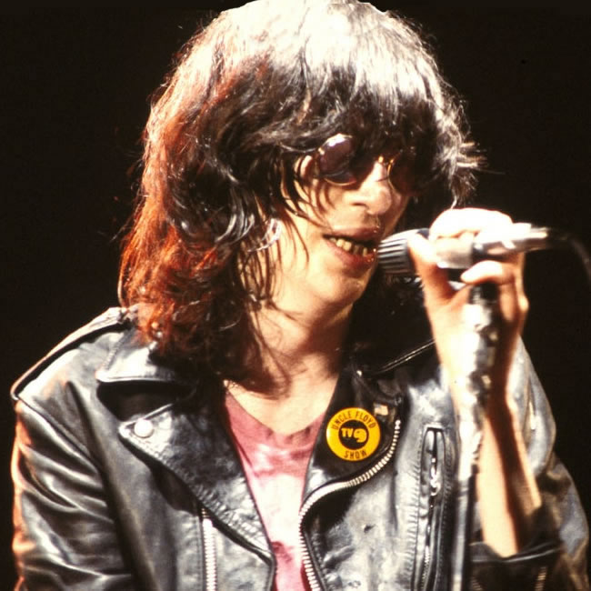
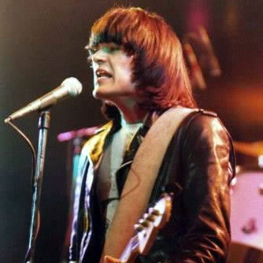
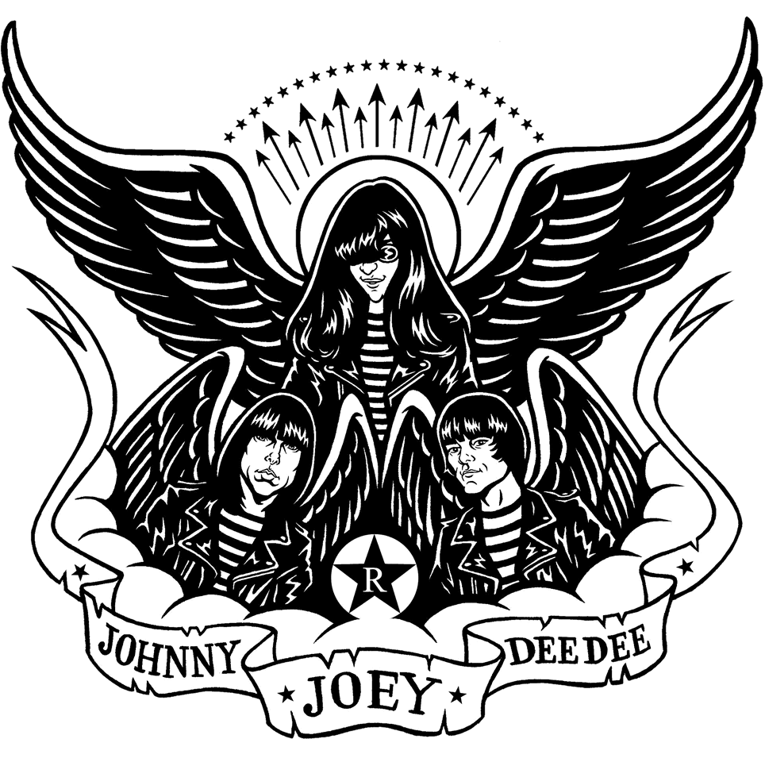

The punk-rock kings
Uno de los nombres esenciales de la música de los 70, impulsores del punk y animadores fundamentales del rock avivando la substancia del rock’n’roll más tradicional con una potente amalgama de sonidos pop, surf, bubblegum y rock, recreados por tres acordes y pegadizas melodías de cortísima duración, los Ramones se convirtieron en uno de los grupos más influyentes de todos los tiempos.
Componentes fundadores

Joey
Cantante… Fallecio en 2001.
Dee Dee
Bajista y compositor… Fallecio en 2002.


Johnny
Guitarrista… Fallecio en 2004.
Los baterias
Tommy

1974-78
Marky

1978-83 y 1987-96
Richie

1983-87
Discografía

Lamentablemente ya no podremos disfrutar de los Ramones en directo nunca más. Pero nos dejaron un buen puñado de discos cargados de himnos generacionales.
Ramones (76)
Leave home (77)
Rocket to Russia (77)
Road to ruin (78)
End of the century (80)
Pleasant Dreams (81)
Subterranean Jungle (83)
Too Tough to Die (84)
Animal Boy (86)
Halfway to Sanity (87)
Brain Drain (89)
Mondo bizarro (92)
Acid Eaters (93)
¡Adiós amigos! (95)